조경기사 (2016-10-01 기출문제)
1과목: 조경사
1. 조선시대 경영된 서원과 경관요소가 일치하는 것은?
- 옥산서원 - 유상대
- 무성서원 - 취한대
- 소수서원 - 사산오대
- 도산서원 - 천광운영대
(정답률: 66%)

2. 이집트의 현존하는 최고의 신원(Shrine Garden)에 대한 설명과 관계없는 것은?
- 핫셉수트 여왕의 장제신전이다.
- 데르 엘 바하리의 산속 절벽 밑에 입지하였다.
- 연못가에 파피루스(Cyperus papyrus)를 식재하였다.
- 3개의 경사로와 큰 중정을 지나 성소로 인도된다.
(정답률: 61%)
3. 17C 프랑스 조경가인 앙드레 르 노트르(Andre Le Notre)와 관계가 먼 것은?
- 보르 뷔 콩트(Vaux - le - Viconte)
- 베르사이유(Versailles)궁원
- 자수화단(Parterre de broderie)
- 하-하(Ha - ha)
(정답률: 88%)
4. 석재 점경물의 명칭과 용도가 옳지 않은 것은?(오류 신고가 접수된 문제입니다. 반드시 정답과 해설을 확인하시기 바랍니다.)
- 돌확 - 석연지나 물거울로 사용
- 석분 - 괴석을 받치는 데 사용
- 석가산 - 인공석을 쌓고 다듬어 산을 표현
- 대석 - 해시계, 화분 등의 다듬은 받침돌
(정답률: 60%)
5. 스페인의 알함브라 궁원의 파티오 중 가장 규모가 작고, 바닥은 자갈로 무늬가 그려져 있으며 구석진 자리에 4그루의 사이프레스가 심어져 있는 곳은?
- 연못의 파티오(Court of the Myrtles)
- 사자의 파티오(Court of Lions)
- 다라하의 파티오(Patio de la Reja)
- 레하의 파티오(Patio de la Reja)
(정답률: 70%)
6. 우리나라 왕궁조경 사례지로서 임해전 건물을 조성하여 바다를 상징적으로 축경한 기법을 보여주는 곳은?
- 고구려 안학궁 진주지
- 백제 사비궁 궁남지
- 신라 동궁과 월지(안압지)
- 발해 상경용천부 경박호
(정답률: 88%)
7. 고대 로마주택의 중정(페리스틸리움)에 도입되었던 조경요소로 가장 부적합한 것은?
- 수반
- 꽃
- 동굴
- 탁자
(정답률: 83%)
8. 청평사 선원(문수원 정원)과 관련이 없는 것은?
- 이자현이 축조
- 고려시대의 정원
- 방지원도로 구성
- 은둔생활을 위한 정원
(정답률: 65%)
9. 다음 중 이슬람 정원의 특징이 아닌 것은?
- 정원은 주 건물의 북향이나 동향에 배치하였다.
- 차가운 물과 맑은 샘을 동경하여 분수 등을 설치하였다.
- 정원의 각 요소마다 유명인들의 조각상을 배치하였다.
- 연못형태는 규칙적인 4각형, 8각형, 원형이 대부분이다.
(정답률: 81%)
10. 중국 평천산장(平泉山莊)에 관한 내용 중 옳은 것은?
- 이덕유가 조성한 정원이다.
- 연못은 태호를 상징하였다.
- 송나라 때 축조된 정원이다.
- 소주의 명원으로 유명하다.
(정답률: 73%)
11. 서원에서 제사에 쓰일 제물(짐승)들을 세워놓고 품평하기 위해 만든 것은?
- 사직단(社稷壇)
- 생단(牲壇)
- 관세대(冠歲臺)
- 정료대(庭燎臺)
(정답률: 84%)
12. 창덕궁 후원에 있는 연못과 정자가 짝지어진 것 중 맞지 않는 것은?
- 부용지 - 부용정
- 애련지 - 애련정
- 몽답지 - 몽심정
- 반도지 - 관람정
(정답률: 60%)
13. 브라질 조경가 벌 막스(Roberto Burle Marx)작품의 특징은?
- 향토식물의 적극 활용
- 20세기의 바로크 양식
- 캘리포니아 양식
- 기하학적 정원 양식
(정답률: 82%)
14. 중국 청시대 이궁으로서 조성이 시작된 순서가 오래된 것부터 알맞게 나열된 것은?
- 정명원 → 피서산장 → 장춘원
- 피서산장 → 향산 정의원 → 기춘원
- 피서산장 → 장춘원 → 정명원
- 향산 정의원 → 원명원 → 정명원
(정답률: 44%)
15. 중세의 수도원(monastry)과 성관(castle) 정원에 대한 설명 중 옳은 것은?
- 수도원 정원은 프랑스를 중심으로 발달하였고, 성관 정원은 이탈리아를 중심으로 발달하였다.
- 수도원 정원은 화려한 식물을 심었고, 성관 정원은 실용적이고 장식적 정원을 형성하였다.
- 수도원 정원 중정의 교차점에는 파라디소라 하여 분천을 두거나 큰 나무를 식재하였다.
- 수도원 정원의 주랑식 중정은 흉벽이 있고, 성관 정원의 회랑식 열주는 흉벽이 없다.
(정답률: 64%)
16. 기원전 4500년경 유프라테스 강변에 위치한 도시로, 의도적으로 공원 등이 포함된 도시계획을 쐐기문자로 점토판에 새겨진 곳은?
- 니프르(Nippur)
- 기제(Gizeh)
- 테베(Thebes)
- 호르샤바드(Khorsabad)
(정답률: 76%)
17. 중국 시문을 모아 놓은 고문진보(古文眞寶) 후집(後集)에 실린 낙지론(樂志論)을 쓴 사람은?
- 중장통
- 왕회지
- 이백
- 백거이
(정답률: 61%)
18. 수도원 정원이 자세히 그려진 평면도가 발견된 중세 수도원은?
- San Lorenzo 수도원
- St. Gall 수도원
- Canterbury 수도원
- Santa Maria Grazie 수도원
(정답률: 72%)
19. 조선시대 별서와 민가정원에 애용된 식물로 태평성대 회구의 상징적 표현과 관련 있는 것들로만 짝지어진 것은?
- 국화, 버드나무
- 대나무, 오동나무
- 작약, 모란
- 소나무, 매화
(정답률: 62%)
20. 일본 메이지(明治)시대 야마가타 아리토모(山縣有朋, 산현유붕)의 지휘 아래 오가와 오사무(植治, 식치)가 시공한 사실주의적으로 자연을 묘사한 정원은?
- 겸육원
- 금각사
- 고봉암
- 무린암
(정답률: 46%)
2과목: 조경계획
21. 다음 중 최대일률에 대한 설명으로 옳은 것은?
- 평균체재시간을 고려한 이용자 비율
- 연중 사람이 가장 많이 이용하는 날의 이용자 수
- 연간 이용자 수에 대한 최대일 이용자수의 비율
- 하루 중 가장 많이 이용하는 시간의 이용자 수의 비율
(정답률: 68%)
22. 다음 중 『건축법 시행령』에 따른 「공개공지 등의 확보」 에 대한 설명 중 ( )안에 해당되는 것은?
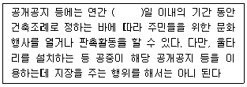
- 25
- 30
- 45
- 60
(정답률: 56%)
23. 산ㆍ하천ㆍ내륙습지ㆍ호소(湖沼)ㆍ농지ㆍ도시 등에 대하여 자연환경을 생태적 가치, 자연성, 경관적 가치 등에 따라 등급화하여 규정에 의해 작성된 지도는? (단, 자연환경보전법을 적용한다.)
- 녹지자연도
- 경관가치도
- 생태ㆍ자연도
- 자연환경도
(정답률: 70%)
24. 자연환경보전법 시행규칙상 시ㆍ도지사 또는 지방 환경관서의 장이 환경부장관에게 보고해야 할 위임업무 보고사항 중 “생태ㆍ경관보전지역 등의 토지매수 실적” 보고는 연 몇 회로 기준하는가?
- 수시
- 1회
- 2회
- 4회
(정답률: 60%)
25. 조경설계기준상 테니스장의 계획ㆍ설계 중 ( )안에 적합한 것은?
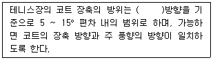
- 정동 - 서
- 북동 - 남서
- 북서 - 남동
- 정남 - 북
(정답률: 73%)
26. 다음 중 조경가의 역할이 아닌 것은?
- 생태학과 자연과학을 기초로 하여 대규모 토지의 체계적 평가와 그에 대한 용도상의 적합도와 능력판단, 개발이나 토지이용의 배분계획, 고속도로의 위치결정, 공장의 입지, 수자원 및 토양의 보존, 쾌적성의 확보, 레크레이션 시설의 개발을 하는 것
- 식물의 생리적, 병리적 특성 및 토양의 이화학적 특성을 연구하며, 자연생태계의 먹이사슬에 대해서 연구하는 것
- 대지의 분석과 종합, 이용자분석에 의하여 여러 자연요소와 시설물들을 기능적 관계나 대지의 특성에 맞추어 배치하는 것
- 식재, 포장, 계단. 분수 등과 같은 한정된 문제들을 해결하기 위하여 구성요소, 재료 혹은 수목들을 선정하여 시공을 위한 세부적인 설계로 발전시키는 것
(정답률: 81%)
27. 다음 중 경관분석의 방법이 아닌 것은?
- 간격법
- 기호화방법
- 메쉬 분석방법
- 심미적 요소의 계량화방법
(정답률: 64%)
28. 다음 중 차량의 진입을 금지하고 수목, 벤치 등을 설치하여 보행자만 자유롭게 다니게 하는 몰을 지칭하는 것은?
- 풀 몰(full mall)
- 녹도(green way)
- 세미 몰(semi mall)
- 트랜싯 몰(transit mall)
(정답률: 59%)
29. 개인적 공간에 대하여 홀(Hall)이 구분한 것 중 사회적 거리에 대한 설명이 옳은 것은?
- 레슬링, 펜싱 등을 할 때 유지되는 거리
- 보행공간 길을 걸을 때에 유지되는 거리
- 업무상 대화를 할 때 유지되는 거리
- 거리로는 4m 이상을 유지하는 거리
(정답률: 75%)
30. 국토의 계획 및 이용에 관한 법률상의 용도지역 중 가장 건폐율을 높게 할 수 있는 도시지역은?
- 주거지역
- 상업지역
- 공업지역
- 녹지지역
(정답률: 72%)
31. 환경영향평가 또는 전략환경영향평가를 받지 않은 상태에서 공원관리청이 자연공원계획을 결정하거나 변경할 경우에 반드시 수행해야 하는 평가사항에 해당되지 않는 것은?
- 경관분석
- 환경현황조사
- 자연생태계 변화분석
- 대기 및 수질 변화분석
(정답률: 56%)
32. 주거단지 계획에 쿨데삭(cul-de-sac) 도로를 도입 시 가장 큰 장점은?
- 도로의 길이를 줄일 수 있다.
- 자동차 소음을 차단할 수 있다.
- 막힘 없는 도로망 구축이 가능하다.
- 자동차의 위험이 없는 녹지를 확보할 수 있다.
(정답률: 77%)
33. 다음 혼잡(crowding)과 관련된 설명 중 옳지 않은 것은?
- 혼잡은 기복적으로 밀도와 관계되는 개념이다.
- 물리적 밀도가 높아도 사회적 밀도는 낮을 수 있다.
- 고밀도에서는 저밀도에서보다 타인에 대한 호감이 높아진다.
- 사회적 밀도는 얼마나 많은 사회적 접촉이 일어나는가 하는 것이다.
(정답률: 79%)
34. 정지계획 시 주요 원칙으로 가장 거리가 먼 것은?
- 경사가 없을수록 좋다.
- 배수관계를 고려해야 한다.
- 사용 목적에 맞게 정지하여야 한다.
- 표토는 보존하여 정지작업 후 재사용한다.
(정답률: 68%)
35. 다음 보기와 같은 특징을 갖는 주택 유형은?
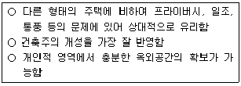
- 아파트
- 연립주택
- 단독주택
- 다세대주택
(정답률: 84%)
36. 조경설계기준상의 휴게공간의 구성(입지ㆍ배열, 평면구성)으로 옳지 않은 것은?
- 공동주택단지의 경우「도시ㆍ군계획시설의 결정ㆍ구조 및 설치기준에 관한 규칙」에 따라 배치한다.
- 휴게공간과 도로ㆍ주차장 기타 인접 시설물과의 사이에는 완충공간을 배치한다.
- 건축물이나 휴게시설 설치공간과 보행공간 사이에는 완충공간을 설치한다. 특히 휴게시설물 주변에는 1m 정도의 이용공간을 확보한다.
- 놀이터에는 놀이시설을 이용하는 유아가 노는 것을 보호자가 가까이에서 볼 수 있도록 휴게시설을 배치한다.
(정답률: 58%)
37. 다음 공원시설 중 휴양시설에 해당하지 않는 것은?(오류 신고가 접수된 문제입니다. 반드시 정답과 해설을 확인하시기 바랍니다.)
- 야영장
- 전망대
- 야유회장
- 노인복지관
(정답률: 63%)
38. 다음 중 조경계획(造景計劃) 과정의 순서가 옳은 것은?
- 목표수립 → 분석 → 대안작성 → 도입활동 및 시설프로그램 → 마스터 플랜
- 목표수립 → 분석 → 도입활동 및 시설프로그램 → 대안작성→ 마스터 플랜
- 분석 → 목표수립 → 대안작성 → 도입활동 및 시설프로그램 → 마스터 플랜
- 분석 → 대안작성 → 목표수립 → 도입활동 및 시설프로그램 → 마스터 플랜
(정답률: 47%)
39. 다음 중 시각적 환경의 질 향상을 목표로 하는 접근방법이 아닌 것은?
- 이미지(imageability)
- 영역성(territoriality)
- 연속적 경험(sequence experience)
- 시각적 복잡성(visual complexity)
(정답률: 70%)
40. 국토교통부장관이 공원녹지기본계획의 수립기준을 결정할 때 종합적으로 고려해야 할 내용에 해당되지 않는 것은?(단, 도시공원 및 녹지 등에 관한 법률 시행령을 적용한다.)
- 생태ㆍ경관보전지역 안의 오수 및 폐수의 처리 방안과 규정에 따른 오수 및 폐수의 처리를 할 수 있도록 할 것
- 장래 이용자의 특성 등 여건의 변화에 탄력적으로 대응할 수 있도록 할 것
- 체계적ㆍ지속적으로 자연환경을 유지ㆍ관리하여 여가활동의 장이 형성되고 인간과 자연이 공생할 수 있는 연결망을 구축할 수 있도록 할 것
- 공원녹지의 보전ㆍ확충ㆍ관리ㆍ이용을 위한 장기발전방향을 제시하여 도시민들의 쾌적한 삶의 기반이 형성되도록 할 것
(정답률: 71%)
3과목: 조경설계
41. 건축제도용지중 A2 용지의 규격으로 맞는 것은?
- 297 mm × 420 mm
- 420 mm × 594 mm
- 594 mm × 841 mm
- 841 mm × 1189 mm
(정답률: 69%)
42. 조경기준에서 수목의 수량은 일정 기준에 의하여 가중하여 산정한다. 그 기준 내용으로 틀린 것은?(단, 국토교통부 조경기준을 적용한다.)(문제 오류로 실제 시험에서는 1, 2번이 정답처리 되었습니다. 여기서는 1번을 누르면 정답 처리 됩니다.)
- 상록교목으로서 수관폭 5m 이상인 수목 1주는 교목 6주를 식재한 것으로 산정한다.
- 낙엽교목으로서 흉고직경 15cm 이상인 수목 1주는 8주를 식재한 것으로 산정한다.
- 낙엽교목으로서 수고 4m 이상이고, 흉고직경 12cm 이상인 수목 1주는 교목 2주를 식재한 것으로 산정한다.
- 상록교목으로서 수고 5m 이상이고, 수관폭 3m 이상인 수목 1주는 교목 4주를 식재한 것으로 산정한다.
(정답률: 76%)
43. 다음 중 포장 재료로서 벽돌의 특성으로 옳은 것은?
- 단순한 색채
- 보수에 용이
- 동결파손이 적음
- 보행 시 미끄러움
(정답률: 73%)
44. 다음 그림은 어떤 물체를 제 3각법 정투상도로 나타낸 것이다. 입체도로 옳은 것은?
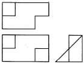
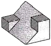
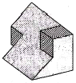
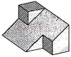
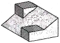
(정답률: 75%)
45. 광장을 계획하는데 건물사이가 60 m라 할 때 편안한 위요감(최소한의 폐쇄감)을 느낄 수 있는 양쪽 건물 높이는?
- 15m
- 20m
- 30m
- 60m
(정답률: 52%)
46. 다음 [보기]의 먼셀 기호 표시에 대한 설명으로 틀린 것은?
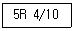
- 명도는 4이다.
- 색상은 5R 이다.
- 채도는 4/10 이다.
- ‘5R 4의 10’ 이라고 읽는다.
(정답률: 74%)
47. 한국산업표준(KS)의 건축제도통칙에 규정된 척도가 아닌 것은?
- 5/1
- 1/1
- 1/1,100
- 1/6,000
(정답률: 65%)
48. 다음 중 환경미학에 대한 설명으로 옳은 것은?
- 슈퍼그래픽을 통해 도시를 미화시키는 작업이다.
- 환경심리학과 같은 용어로 환경지각 및 인식을 연구하는 분야이다.
- 과학문명의 발달 결과로 빚어진 환경 파괴 방지를 연구하는 학문이다.
- 자연에 내재하는 미적 질서를 파악하여 인간 환경 창조에 구현시키고자 하는 학문이다.
(정답률: 64%)
49. 다음 조형미의 원리 중 조화와 역학적 안정을 포함한 물리적인 여러 단위의 공간적 배치하고 정의할 수 있는 것은?
- 개성(personality)
- 율동(rhythm)
- 균형(balance)
- 대비(contrast)
(정답률: 75%)
50. 가까이서 보면 여러 가지 색들이 좁은 영역을 나누고 있으나. 멀리서 보면 이들이 섞여져서 하나의 색채로 보이는 혼합은?
- 가산혼합
- 감산혼합
- 병치혼합
- 보색혼합
(정답률: 62%)
51. 다음 그림과 같은 평면도법으로 가장 적합한 것은?
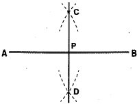
- 직각의 3등분
- 직선의 2등분
- 직선의 n등분
- 직선 끝에서의 수직선
(정답률: 72%)
52. 다음 중 조경설계기준상의 『축구장』의 배치 및 규격기준으로 가장 부적합한 것은?
- 장축을 동-서로 배치한다.
- 배수시설의 기준은 육상경기장에 준한다.
- 경기장 크기는 길이 90~120m, 폭 45~90m이어야 하며, 길이는 폭보다 길어야 한다.
- 경기장 라인은 12cm 이하의 명확한 선으로 긋되, V자형의 홈을 파서 그으면 아니 된다.
(정답률: 75%)
53. 다음 중 전통조경공간에 우리나라 민간신앙의 상징물로 활용하기에 가장 부적합한 것은?
- 도리
- 서낭당
- 장승
- 돌탑
(정답률: 65%)
54. 통행의 안전성과 쾌적성을 확보하며, 시각상 불쾌감이나 소음공해를 차단하기 위해 고속도로 연변의 일정지역에 식재하는 고속도로 시설녹지 조경 설명 중 맞는 것은?
- 사람과 동물의 칩입방지를 위하여 펜스와 병용해서 식재하는 방법을 방재식재라 한다.
- 경관상 열악한 환경과 근접도로의 신호등 차폐를 위하여 상록 교목을 식재하는 방법을 경관조화식재라 한다.
- 터널 내외의 명암변화 완화를 위하여 출입구 중앙분리대나 노견에 상록 교목을 식재하는 방법을 강조식재라 한다.
- 평탄지나 절ㆍ성토 지역에 일정폭의 관목을 밀식하여 일탈한 차량의 충격을 완화시키는 방법을 완충식재라 한다.
(정답률: 67%)
55. 설계 시 도면표시 기호와 표시사항이 틀린 것은?
- A : 면적
- R : 길이
- W : 너비
- THK : 두께
(정답률: 77%)
56. 휴양시설 중 전망대 설치 시 설계 고려사항으로 틀린 것은?
- 전망대 위치는 능선이나 산 정상보다는 진입로 근처가 바람직하다.
- 전망대의 면적은 1인당 보통 5~7m2가 적당하다.
- 위치는 조망에 유리한 방향을 향하도록 하는 것이 좋다.
- 보안상 안전하고 이용자가 사용하기 좋은 곳을 고려해야 한다.
(정답률: 76%)
57. 다음 중 소형자동차 제원에 적합한 최소 회전 반지름은?(단, 제원의 단위는 m이고, 도로의 구조ㆍ시설 기분에 관한 규칙을 적용한다.)
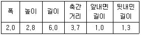
- 6 m
- 7 m
- 12 m
- 15 m
(정답률: 54%)
58. 환경색채를 계획하면서 좀 더 부드러운 느낌이 되도록 색을 조정하려고 할 때 가장 옳은 것은?
- 명도를 낮춘다.
- 채도를 낮춘다.
- 한색계역의 색을 사용한다.
- 보색대비의 색 배합을 사용한다.
(정답률: 64%)
59. 옥외 공간구성에 있어서 시각적 종점(visual terminal)의 요소로 이용 가능도가 가장 큰 것은?
- 하늘
- 흥미로운 대상물
- 바닥의 패턴(patten)
- 둘러싸는 요소(enclosure)
(정답률: 66%)
60. 다음 중 선 긋는 방법의 설명으로 틀린 것은?
- 선 긋는 방향은 수평선은 우에서 좌로 그리고, 수직선은 위에서 아래로 그린다.
- 선 긋기를 할 때에는 시계방향으로 회전시키면서 진행한다.
- 선은 처음부터 끝나는 부분까지 일정한 힘으로 긋는다.
- 선의 연결과 교차부분이 정확하게 되도록 긋는다.
(정답률: 79%)
4과목: 조경식재
61. 다음 중 특징 별 수종의 연결이 맞는 것은?
- 청녹색 수피 : 분비나무
- 붉은색 단풍 : 튜울립나무
- 보라색의 열매 : 매발톱나무
- 짙은 꽃 향기 : 정향나무
(정답률: 58%)
62. 다음 지주목에 대한 설명 중 틀린 것은?
- 삼각형 지주 등은 수간, 주간 및 기타 통나무와 교착하는 부위에 2곳 이상 결속한다.
- 인공지반에 식재하는 수고 1.2m 이상의 수목은 바람의 피해를 고려하여 지지시설을 하여야 한다.
- 지주목 목재는 내구성이 강하고 방부처리된 것으로 하며 지주용 통나무는 마구리를 가공하고 절단면과 측면을 다듬어 사용한다.
- 준공 후 6개월 이내 지주목의 재결속을 실시함을 원칙으로 하되 자연재해에 의한 훼손 시는 즉시 복구하여야 한다.
(정답률: 59%)
63. 다음 중 잔디의 특징에 대한 설명으로 틀린 것은?
- 벤트 그라스는 한지형 잔디로 분류된다.
- 한국잔디는 호광성으로 예취 관리면에서 우수한 편이다.
- 톨 훼스큐는 다발형 생육으로 비교적 피복율이 낮은 편이다.
- 버뮤다그라스는 한지형 잔디로 재생력이 매우 약하여 지속적인 관리가 요구된다.
(정답률: 60%)
64. 군락 측정용 방형구의 면적 중 삼림군락 측정용으로 사용되는 최소 넓이(m2) 기준은?
- 0.1 ~ 1
- 5 ~ 10
- 25 ~ 100
- 200 ~ 500
(정답률: 47%)
65. 다음 중 Raunkier의 생활형 체계 구분에 따라 분류한 결과 지상식물에 속하는 귀화식물은?
- Ailanthus altissima
- Stewartia pseudocamellia
- Sophora japonica
- Zelkoua serrata
(정답률: 35%)
66. 다음 중 개화기가 가장 늦은 수종은?
- 회화나무
- 차나무
- 자귀나무
- 배롱나무
(정답률: 43%)
67. 인공지반에서 수고 8m 소나무 아래에 진달래와 철쭉을 함께 식재하려고 할 때 확보해야 할 최소 토심은 얼마인가?(단, 배수구배 : 1.5~2.0%, 자연토양 사용)
- 15cm
- 30cm
- 45cm
- 70cm
(정답률: 41%)
68. 다음 중 내습성 수종으로만 구성된 것은?
- 피나무, 물오리나무
- 오리나무, 낙우송
- 굴피나무, 귀롱나무
- 향나무, 진달래
(정답률: 70%)
69. 노란색 꽃과 노란색 단풍으로 관상가치가 높아 공원의 하층목으로 적당한 수종은?
- Lindera obtusiloba
- Liriodendron tulipifera L.
- Hemiptclca dauidii
- Fagus engleriana
(정답률: 52%)
70. 우리나라 삼림대 중 온대림 극성상(Climax)의 생태계에서 기후상 우점종에 위치할 수 있는 수종은?(오류 신고가 접수된 문제입니다. 반드시 정답과 해설을 확인하시기 바랍니다.)
- Pinus densiflora
- Pinus koraiensis
- Populus dauidana
- Carpinus laxiflora
(정답률: 35%)
71. 다음 중 수목의 굴취와 관련된 설명으로 틀린 것은?
- 심근성 수종은 일반적으로 보통분의 형태로 만든다.
- 녹화마대는 황마로 만든 천연섬유 시트를 사용한다.
- 식물생장조절제, 상처 유합제는 표면에 막을 형성하는 유제로, 식물에 유해하지 않아야 한다.
- 표준적인 뿌리분의 크기는 근원직경의 4배를 기준으로 하되 수목의 이식력과 발근력을 적절히 고려하도록 한다.
(정답률: 64%)
72. 다음 중 수종명과 과명이 잘못 연결된 것은?
- 나무수국 : 인동과
- 사철나무 : 노박덩굴과
- 팔손이 : 두릅나무과
- 담쟁이덩굴 : 포도과
(정답률: 46%)
73. 개체군의 특성에 관한 설명으로 옳은 것은?
- 단위 생활공간당 개체수를 조밀도라 한다.
- 단위 총공간당 개체수를 생태밀도라 한다.
- 개체군의 분포는 균일형, 임의형, 괴상형이 있다.
- 생존형 곡선에 있어 인간은 오목한 형태를 나타낸다.
(정답률: 57%)
74. 다음 중 병아리꽃나무의 특징에 대한 설명으로 틀린 것은?
- 장미과 나무이다.
- 학명은 Rhodotypos scandens Makino 이다.
- 꽃은 3~5월에 소담한 황색의 꽃이 핀다.
- 해발 약 700m 정도 되는 인가 부근 또는 해안가에서 자란다.
(정답률: 43%)
75. 초기생육이 비교적 빠르고, 도시의 토양오염 및 대기오염에도 강하며 삽목 번식도 잘 되어서 가로수로 흔히 심어지고 있는 것은?
- Ginkgo biloba
- Populus euramericana
- Ailanthus altissima
- Cedrus deodara
(정답률: 41%)
76. 유전적으로 우수한 나무들을 위한 종묘 또는 클론 재종원에 대하여 바르게 설명한 것은?
- 종묘채종원은 차대검정을 별도로 실시해야 한다.
- 종묘채종원은 채종원 내 유전자의 폭을 넓히는 데 유리하다.
- 클론채종원은 한 번 조성하여 2세대 이상의 선발이 가능하다.
- 클론 채종원은 서로 친척 관계에 있는 나무들 간에 교배될 가능성이 높다.
(정답률: 51%)
77. 다음 중 바람에 쓰러지기 쉬운 수종이 아닌 것은?
- 미루나무
- 버드나무
- 아까시나무
- 졸참나무
(정답률: 66%)
78. 다음 중 능소화에 대한 설명이 틀린 것은?
- 낙엽활엽덩굴성 식물이다.
- 열매는 삭과로 네모지며 끝이 둔하고 가죽질이며 2개로 갈라지고 10월에 익는다.
- 나무껍질은 흑갈색이고 가로로 벗겨지며 가지는 포복성이 강하여 다른 물체를 감아 올라간다.
- 1년생 줄기를 20cm 내외로 잘라서 3월부터 7월 사이에 삽목하여 증식한다.
(정답률: 42%)
79. 옥상정원과 같은 인공지반 위에 식재할 경우 상대적으로 중요하게 고려하지 않아도 되는 것은?
- 방수와 배수
- 미기후 조건
- 광선 및 습도
- 지반의 구조 및 강도
(정답률: 49%)
80. 다음 수종 중 붉은색의 단풍이 들지 않는 것은?
- Acer mono
- Rhus chinensis
- Acer triflorum
- Euonymus alatus
(정답률: 53%)
5과목: 조경시공구조학
81. 건설기계경비 산정에 있어 기계손료(機械損料)의 항목에 포함되지 않는 것은?
- 관리비(管理費)
- 정비비(整備費)
- 소모품비(消耗品費)
- 감가상각비(減價償却費)
(정답률: 44%)
82. 평판측량을 실시한 결과 그림과 같은 결과를 얻었을 때 점 B의 표고 Hb(m)는?(단, n = 12.5, D = 50m, S = 1.50m, I = 1.10m, Ha = 26.85m)
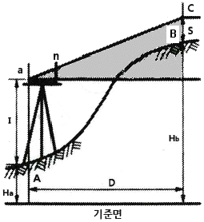
- 6.25
- 29.45
- 32.70
- 35.70
(정답률: 48%)
83. 표토모으기 및 활용에 관한 표준시방 사항으로 옳지 않은 것은?
- 채집대상 표토의 토양산도(pH)가 5.6 ~ 7.4가 되도록 하여 사용한다.
- 보관을 위한 가적치의 최적두께는 2.5m를 기준으로 하며 최대 5.0m를 초과하지 않는다.
- 식물생장에 적합한 표토의 구분은 유기물, 무기물, 유해한 물질의 존재여부 및 총량 등으로 결정한다.
- 하층토와 복원표토와의 조화를 위하여 최소한 깊이 0.2m 이상의 지반을 경운한 후 그 위에 표토를 포설한다.
(정답률: 49%)
84. 조경공사 중 잔디붙임 줄떼 작업 시 표준간격(cm)의 범위에 포함되지 않는 것은?
- 10
- 15
- 30
- 50
(정답률: 68%)
85. 일반 콘크리트의 비비기에 관한 설명으로 옳지 않은 것은?
- 비비기는 미리 정해둔 비비기 시간의 3배 이상 계속해서는 안 된다.
- 비비기를 시작하기 전에 미리 믹서내부를 모르타르로 부착시켜야 한다.
- 믹서 안의 콘크리트를 전부 꺼낸 후에 다음 비비기 재료를 투입하여야 한다.
- 믹서 안에 재료를 투입한 후의 비비기 시간은 가경식 믹서의 경우 3분 이상을 표준으로 한다.
(정답률: 52%)
86. 수평거리 측량에서 줄자의 신축으로 생기는 오차는?
- 착오
- 정오차
- 부정오차
- 우연오차
(정답률: 55%)
87. 버킷용량 2.0m3인 백호로 15t 덤프 트럭에 토사를 적재하여 운반하고자 한다. 조건이 아래와 같을 때 트럭에 적재하는 데 소요되는 시간은?
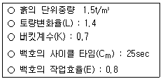
- 2.37분
- 3.33분
- 4.67분
- 5.21분
(정답률: 30%)
88. 배수방법에는 합류식과 분류식이 있다. 다음 중 합류식 배수방법의 장점에 해당하는 것은?
- 시공이 용이하다.
- 수질오염을 방지하는 데 유리하다.
- 전 오수를 하류처리장으로 도달시킬 수 있다.
- 유속이 일정하고 빨라 침전물이 생기지 않는다.
(정답률: 42%)
89. 에폭시수지 접착제에 대한 설명으로 틀린 것은?
- 급경성이며 내화학성이 크다.
- 접착력이 크고 내수성이 우수하다.
- 금속, 석재, 도자기 등의 접착에 사용이 가능하다.
- 내알칼리성이 적어 콘크리트에는 사용이 어렵다.
(정답률: 62%)
90. 공사에 있어서 시방서, 도면 등 설계도서 간의 내용에 차이가 있을 때, 적용하는 순서로 맞는 것은?
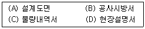
- (D)→(B)→(A)→(C)
- (A)→(B)→(C)→(D)
- (B)→(A)→(C)→(D)
- (C)→(B)→(A)→(D)
(정답률: 52%)
91. 붉은 벽돌을 사용하여 두께 1.5B, 벽 면적 40m2를 쌓을 때 소요되는 기본벽돌의 소요량은?(단, 할증률을 고려한다.)
- 9408장
- 9229장
- 8960장
- 8850장
(정답률: 49%)
92. 광원에 의해 빛을 받는 장소의 밝기를 뜻하는 조도의 단위는?
- 룩수(lx)
- 암페어(A)
- 칸델라(cd)
- 스틸브(sb)
(정답률: 76%)
93. 목재의 전건중량과 생재용적을 기초로 하는 어떤 목재의 비중을 0.54로 할 때, 이 목재가 완전히 물로 포화되었을 때의 함수율은?
- 90%
- 100%
- 110%
- 120%
(정답률: 34%)
94. 4개의 지주를 가진 데크 구조에서 전체 8ton의 하중을 4개의 지주가 균등하게 지탱하고 있을 때, 각 지주 단면의 면적이 400cm2 이고, 지주의 압축 허용응력이 fc = 7kg/cm2 이라면 압축력에 대한 안전도는 얼마인가?
- 0.7
- 1.2
- 1.4
- 1.6
(정답률: 46%)
95. 옥외조명기법에 대한 설명으로 틀린 것은?
- 하향조명 : 사람의 눈이 익숙한 조명기법으로 상향식 조명보다 덜 인상적이다.
- 그림자조명 : 물체의 측면이나 하향으로 빛을 비추어 배경에 독특한 그림자를 연출한다.
- 산포조명 : 시각적인 목표점을 제공하고 시선을 점차적으로 반대편으로 유도하기 위한 것이다.
- 실루엣조명 : 물체의 외곽부 형태를 강조하기 위하여 물체의 뒤에 있는 배경면을 조명하는 것이다.
(정답률: 61%)
96. 공정표에서 Critical Path의 설명으로 틀린 것은?
- 공정표상의 주 공정선이다.
- Critical Path 중 한 작업구간이 늦어지면 그만큼 공사기간이 늘어난다.
- Critical Path 상의 각 소요일수의 합은 각 경로 중 작업일수가 가장 작은 값이 된다.
- Critical Path 상의 작업을 중심으로 공정관리를 진행하면 효과적이다.
(정답률: 71%)
97. 구조물을 역학적으로 해석하고 설계하기 위하여 시행하는 구조설계의 시행 과정을 바르게 나열한 것은?
- 구조물의 부분산정 → 도면작성 → 구조계획
- 구조계획 → 구조물의 부분산정 → 도면작성
- 도면작성 → 구조물의 부분산정 → 구조계획
- 구조물의 부분산정 → 구조계획 → 도면작성
(정답률: 47%)
98. 그림과 같이 집중하중 P와 분포하중 w가 작용하는 단순보에서 최대 굽힘 모멘트는 얼마인가?
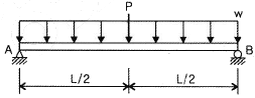
- PL/2+wL2/16
- PL/4+wL2/8
- PL/2+wL2/8
- PL/4+wL2/16
(정답률: 51%)
99. 한 측점 주위의 수평각을 가장 정확하게 관측할 수 있어 1등 삼각측량에 이용되는 수평각의 관측법은?
- 단각법
- 배각법
- 방향각법
- 조합각관측법
(정답률: 43%)
100. 등산로를 복원 정비하려고 할 때, 종단기울기 및 횡단기울기에 대한 기준으로 틀린 것은?
- 종단 7% 이하 기울기 : 흙바닥 정비
- 종단 7~15% 기울기 : 노면침식이 적은 포장재료
- 종단 15% 이상 기울기 : 콘크리트
- 노면배수를 위하여 횡단 기울기는 2~4% 설치
(정답률: 56%)
6과목: 조경관리론
101. 다음 중 방사상균(菌)에 속하는 것은?
- Aspergillus
- Bacillus
- Clostridium
- Streptomyces
(정답률: 45%)
102. 기주식물의 감수성과 병원체의 병원성을 결정하는 환경조건이 아닌 것은?
- 기상조건
- 감염조건
- 재배조건
- 토양조건
(정답률: 37%)
103. 식물의 가해형태에 따른 분류 중 식물의 즙액을 빨아먹는 흡즙성 해충이 아닌 것은?
- 솔껍질깍지벌레
- 천막벌레나방
- 버즘나무방패벌레
- 느티나무벼룩바구미
(정답률: 55%)
104. 다음 중 부식(腐植)에 대한 설명으로 틀린 것은?
- 수분 흡수력이 증가한다.
- 토양 온도를 상승시킨다.
- 유효인산의 고정을 증가시킨다.
- 토양의 안정된 입단구조를 형성한다.
(정답률: 44%)
1⑤. 균열된 아스팔트포장의 보수공법이 아닌 것은?
- 치환공법
- patching공법
- 표면처리공법
- 덧씌우기(overlay)공법
(정답률: 57%)
106. 공원에서 행사를 개최하는 목적으로 적합하지 않은 것은?
- 행정홍보의 수단으로서
- 기업의 신상품 전시 및 판매
- 커뮤니티 활동의 일환으로서
- 야외음악회, 스포츠 강습회 등 시설의 다양한 이용
(정답률: 71%)
107. 일시에 큰 면적을 동시에 관수할 수 있으며, 노동력이 절감되고 비교적 균일한 상태로 관수를 할 수 있는 장점을 지닌 관수방법은?
- 침수식관수법
- 도랑식관수법
- 저면관수법
- 스프링클러관수법
(정답률: 76%)
108. 다음 설명에서 해당하는 원소는?
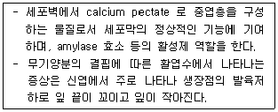
- N
- P
- K
- Ca
(정답률: 47%)
109. 식물바이러스의 전염방법으로 아직 보고되지 않은 것은?
- 매개충
- 접목
- 기공
- 영양번식
(정답률: 62%)
110. 토양 중에 흔히 존재하는 점토광물로서 K+ 의 함량이 많은 퇴적물이 저온 건조하에서 변성작용을 받을 때 형성된 것으로 알려져 있으며, 비 팽창형의 2:1 점토광물은?
- kaolinite
- illite
- chlorite
- montmorillonite
(정답률: 48%)
111. 토양 중에서 질산이 환원되어 아질산으로 되고 다시 암모니아로 변화되는 작용은?
- 질산화성작용
- 질산환원작용
- 질소고정작용
- 유기화작용
(정답률: 68%)
112. 엽면시비의 설명으로 옳지 않은 것은?
- 뿌리를 통한 흡수보다 빠르다.
- 계면활성제를 섞어 시비하면 흡수가 좋아진다.
- 처리 농도가 높을수록 흡수가 많아져 생육에 도움이 된다.
- 특정 시비물질은 화학적 형태의 변화 없이 바로 흡수된다.
(정답률: 64%)
113. 물놀이를 전제로 한 수경시설에 적용할 수 있는 소독방법으로 가장 부적합한 것은?(단, 생물이 없는 경우이다.)
- 염소 소독
- 인산소다 소독
- 자외선 살균
- 오존 살균
(정답률: 52%)
114. 침엽수와 같이 1년에 한마디씩 고정생장을 하는 수목을 전정함에 있어 마디와 마디 간의 길이가 너무 길어서 수관이 엉성한 것을 치밀하게 되도록 조정하고 마디 간의 길이를 줄이는 작업은?
- 적심
- 두목작업
- 맹아억제
- 토피아리
(정답률: 54%)
115. 농약의 제형 중 액상수화제의 효과가 수화제보다 우수한 이유는?
- 주성분의 분자량이 작기 때문이다.
- 유효성분 농도가 불균일하기 때문이다.
- 중량제로 알코올을 사용하였기 때문이다.
- 단위무게당 입자수가 많고 표면적이 넓기 때문이다.
(정답률: 67%)
116. 다음 중 살충제의 항공 살포 시 살포를 중지해야 하는 풍속(km/h)은?
- 1 ~ 2
- 3 ~ 4
- 5 ~ 7
- 8 ~ 13
(정답률: 53%)
117. 토양의 pH 측정에 대한 설명 중에서 맞는 것은?
- 토양시료와 첨가하는 물의 비율에 상관없이 pH 측정값은 같다.
- 토양현탁액의 온도는 pH 측정값에 영향을 미치지 않는다.
- KCI 용액을 사용하여 측정된 pH 값은 증류수로 측정된 값에 비하여 낮게 나타난다.
- 정밀한 pH 측정 장비를 이용하면 토양의 정확한 수소이온 농도를 알아낼 수 있다.
(정답률: 54%)
118. 제초제 살포작업 시 일반적인 유의사항으로 옳은 것은?
- 일조량이 적고 바람이 강한 날 실시하는 것이 효과면에서 좋다.
- 제초제나 살균제 처리는 기온이 5℃이상 30℃ 이하에서 시행하는 것이 좋다.
- 제초제에 섞는 물은 산도가 높거나(pH4 ~ 5이상), 센물(경수)이 좋다.
- 약제를 섞어야 할 경우 유제 → 전착제 → 액화제 → 가용 성분제 → 수화제 순서로 섞어 조제한다.
(정답률: 60%)
119. 공정표의 작성 목적으로 가장 거리가 먼 것은?
- 안전사고 예방
- 시공순서 결정
- 준수 가능한 공기결정
- 가동률의 향상과 생산속도의 향상
(정답률: 70%)
120. 다음 중 마그네슘(Mg)과 길항관계를 갖는 양분은?
- Cu
- Mn
- Na
- Fe
(정답률: 59%)